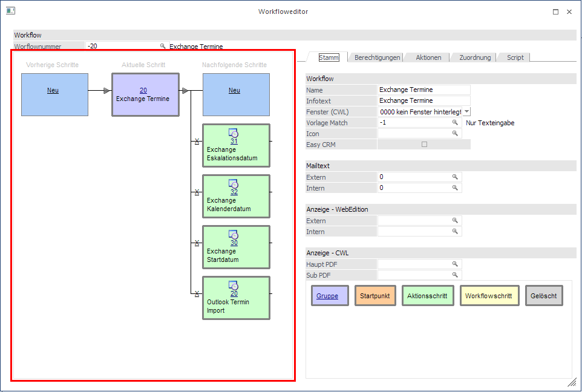
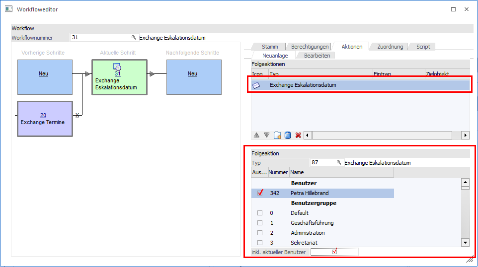
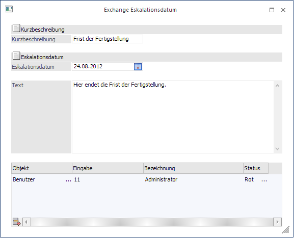
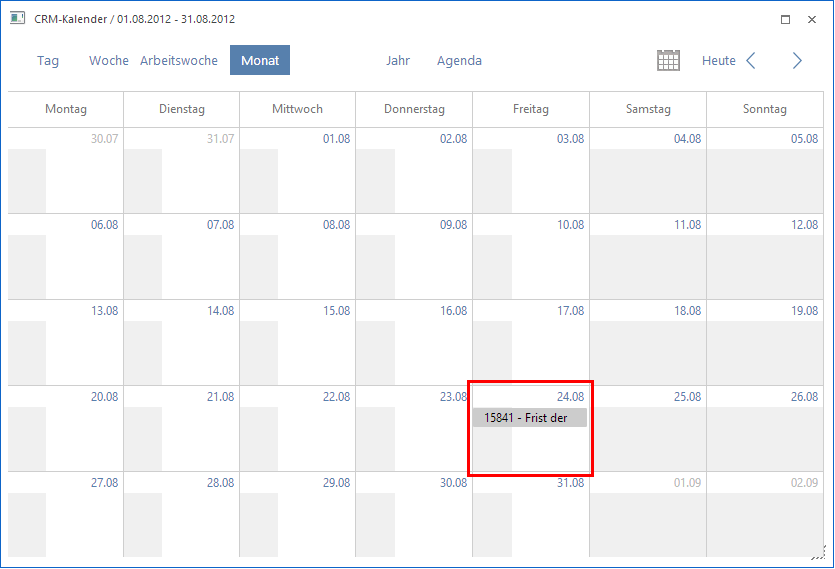
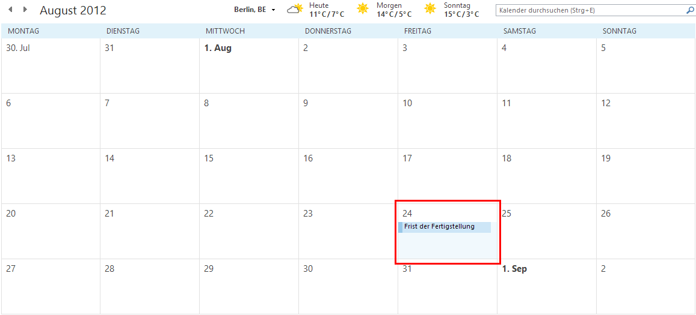

Es wurde eine Workflow-Gruppe "Exchange" angelegt, die sich in die Aktionsschritte
ü 31 - Exchange Eskalationsdatum,
ü 32 - Exchange Kalenderdatum und
ü 30 - Exchange Startdatum
ü 20 - Outlook Termin Import
unterteilt.

Vorbelegen von Termin-Empfänger im Workflow-Editor
Im Workflow-Editor wird bei den Folgeaktionstypen 85, 65, 87 (Exchange-Startdatum, -Kalenderdatum und -Eskalationsdatum) eine Tabelle mit Benutzer und Benutzergruppen angzeigt, mit denen eine Vorbelegung für das Schreiben eines Exchange-Termins getroffen werden kann. Zudem kann hinterlegt werden, dass die Synchronisation inkl. aktuellem Benutzer durchgeführt werden soll.
Hinweis
Beim Auswählen eines Benutzers bzw. einer Benutzergruppe wird dies sofort gespeichert.

Hat man den Aktionsschritt dem gewünschten Kalender zugeteilt, erfasst manden Aktionsschritt (z.B. Exchange Eskalationsdatum).
Beim Schreiben eines Exchange-Termins wird die Vorbelegung aus dem Workflow-Editor in der XRM-Tabelle geladen. Hier können einzelne Benutzer bzw. Benutzergruppen hinzugefügt oder entfernt werden. Bei Auswahl einer Benutzergruppe werden die Termine in die Accounts der einzelnen Benutzer geschrieben, welch sich in der Benutzergruppe befinden.

Dieser Termin wird jetzt sowohl in den Exchange Kalender wie auch in den WinLine Kalender geschrieben.
ü WinLine Kalender

ü Exchange Kalender
